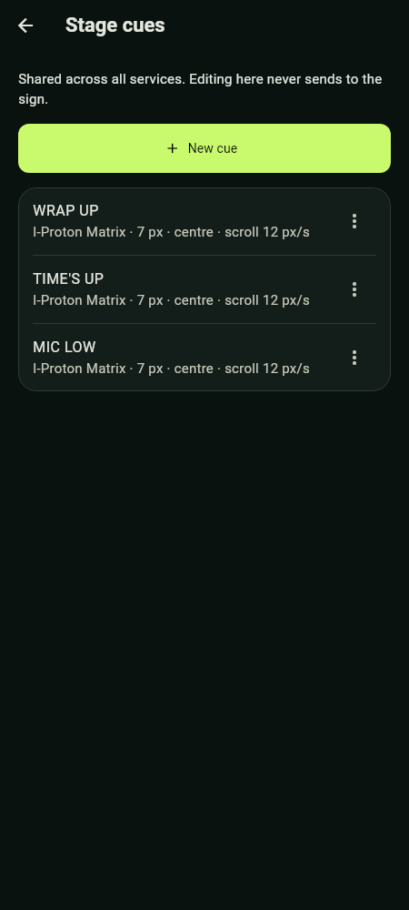
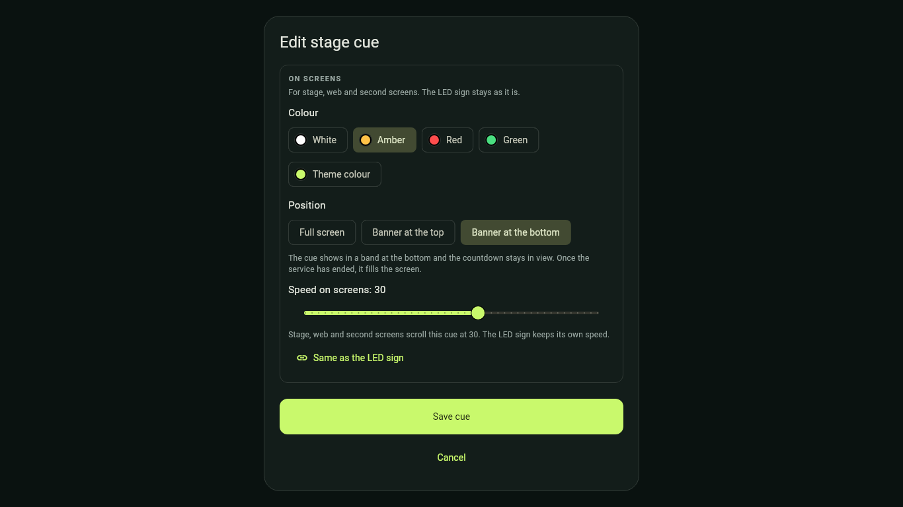
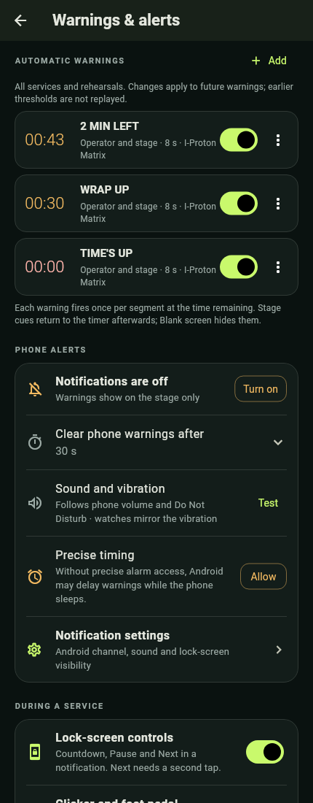

Prepared Stage cues are short reusable instructions such as WRAP UP or AMEN. Configure them before the service in Settings › Stage cues, or use the Manage cues link on Live.
- Create or edit a cue's text, font, height, bold/italic, alignment and effect (static, scroll or flash). Then set how it looks on screens; see below.
- Save it. The Live cue buttons share this saved set across services.
- During the service, tap the cue once to send. On a PC, the keys 1 to 9 send the first nine cues, and pressing the number of the cue that is showing goes back to the timer. There is no editing step on Live; choose deliberately. Before a service starts, Stage cues says "Cues work once the service starts".
- Select Show timer when the instruction has served its purpose. The timer has continued beneath the cue.
Changing the saved cue later does not rewrite content already on stage. Deleting an individual cue or warning offers an eight-second Undo, preserving its formatting. This Undo does not apply to deleting reports.


How a cue looks on screens
The LED sign is small, red and one colour. Stage screens, web screens, a second screen and full screen are large and can do more. The cue editor has a group called On screens for them. Nothing in it changes the LED sign.


| Setting | Choices |
|---|---|
| Colour | White (as before), Amber, Red, Green or Theme colour. They are fixed colours chosen to read clearly on the black stage background. |
| Position | Full screen: the cue takes the place of the countdown. Banner at the top or Banner at the bottom: the cue shows in a band and the countdown, or the clock, stays in view. |
| Speed on screens | How fast a scrolling cue moves on screens, up to 48, twice the sign's fastest. Until you move it, screens follow the sign. Same as the LED sign puts it back. |
The sign's own speed is the slider above it, Speed on the LED sign. A speed that suits the sign is slow on a big screen, which is why there are two.

A banner needs a running service to sit over. After the service has ended, a banner cue fills the screen. Bold, italic, flashing and scrolling work in a banner too.
Preview it both ways. Over the editor's preview is a small switch, LED sign | Stage screen. It starts on the display you are using, and changing it only changes the preview. The editor for a warning's text has the same switch, so a warning can have its own colour, banner and screen speed.
In a wide window, the pane beside Settings › Stage cues and beside Warnings & alerts shows every cue and warning as your display will show it: On the LED sign with an LED sign or the LED simulator, and On the stage screen with stage screens or the Stage simulator. Point at a scrolling cue to play it.

Cues, backups and program files you already have look the same as before. A paired phone or tablet still on an earlier version shows every cue in white and full screen, at the sign's speed.
Text for the LED sign
For LED text, choose I-Proton Matrix, I-Proton Sq-Matrix, or bundled Tinos. Matrix countdown digits are unchanged. Tinos has regular, bold, italic and bold-italic faces; no font import is needed. Tall 14 px preserves more serif detail. Short 7 px fits a smaller line. Static/flashing text must fit the LED width; scroll longer text. Changing square/circular LED preview cells does not change the actual sign's physical LEDs or glyph data.
Automatic warnings
Automatic rules live in Settings › Warnings & alerts and apply to all services and rehearsals. They trigger at time remaining, not time elapsed. In a ten-minute segment, a 01:30 rule triggers when 8 min 30 s have elapsed under ordinary uninterrupted timing. Use suggested warnings adds a starting set.
For each rule set the Remaining time, the warning text and Where to show: Operator + phone notification or Operator and stage. Choose Show for 1–120 seconds, or Scroll once, then return for scrolling text wider than the display. A stage warning returns to the current countdown, or At zero, after its duration. On the LED path, that duration begins after the controller acknowledges it.


New manual cues, Blank, Next and End service supersede a warning. Passed thresholds are not replayed retroactively when rules change. If a manual Quick message covers every connected stage screen, automatic stage cues are consumed while it is present; phone warnings continue. With a targeted Quick message, other stage screens can still show warnings.
Alerts on the phone
Under Phone alerts, Clear phone warnings after is separate: choose 15, 30, 60 seconds or Until dismissed, with 30 seconds as default. A segment change or service end clears obsolete warning notices. This does not shorten stage warning duration or remove the active-service notification. Phone warnings use a distinct vibration pattern, which Wear OS watches mirror.
Turn on Android notifications (Turn on) and Precise timing (Allow) where offered, then use Test on the Sound and vibration row. Volume, the notification channel and Do Not Disturb still affect sound. Background operation starts with the LED sign or sharing and keeps warnings running while locked; if Live says background operation is unavailable, keep the app open. Ready for service also shows whether Android battery optimisation could pause warnings with the screen off, with Allow to fix it. Force-stopping the app is not a supported way to silence a service.
Alerts on a PC
A PC shows a Windows notification at each warning and flashes the app's taskbar button. It plays no sound unless you turn on Play the Windows notification sound. The details are in Get started on Windows.